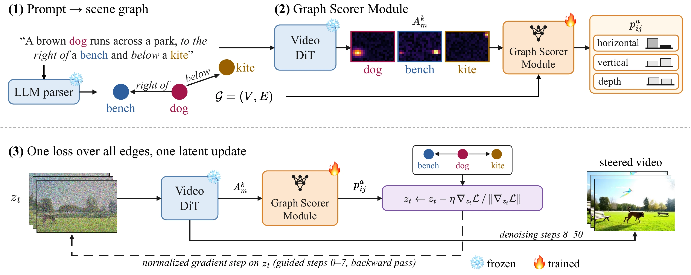
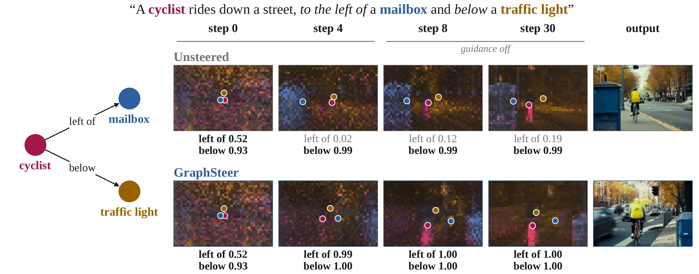
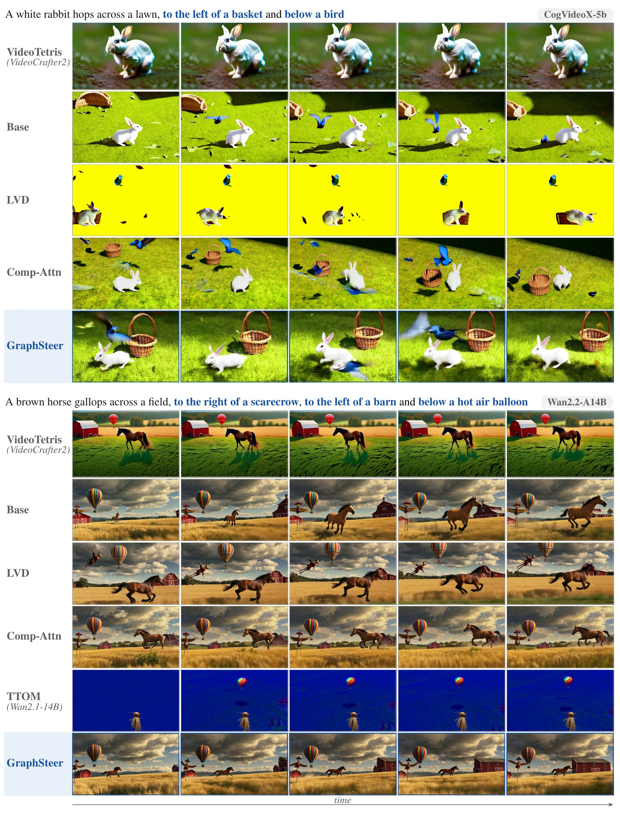
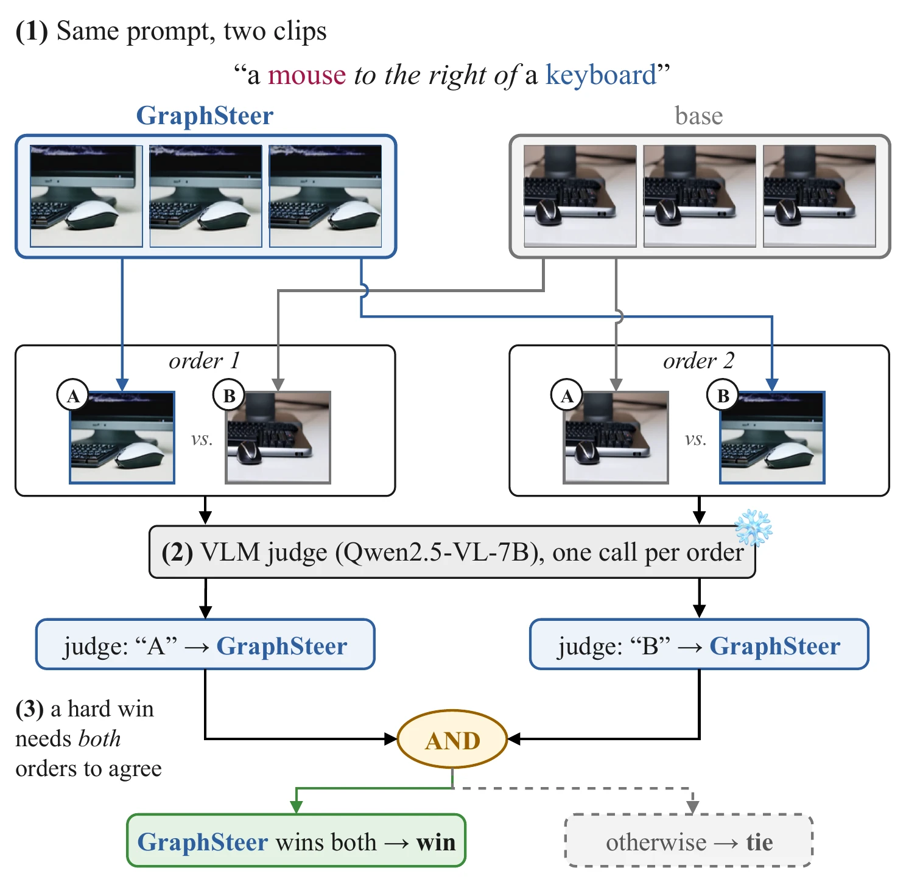

TL;DR — Text-to-video models often miss or misplace objects when a prompt names several relations. GraphSteer turns the prompt into a scene graph, scores every relation directly from the model's cross-attention, and steers a frozen generator towards all of them at once, with no layout and no retraining.
Text-to-video diffusion models can generate remarkable videos, but still struggle when prompts involve multiple relations between objects, often missing or misplacing some of them. Existing approaches tackle this problem using box-based guidance to enforce the desired relations. However, this requires defining the scene layout in advance, manually or using an LLM, for every prompt. This makes the process impractical when scaling to more complex scenes, as it relies on a fixed layout that does not account for what the generator actually produces.
We address these limitations by introducing GraphSteer, a plug-and-play method that uses scene graphs to guide generation towards satisfying multiple relations, without requiring any predefined layout. GraphSteer represents the prompt as a scene graph, whose nodes are objects and whose edges describe their spatial relations. We design a Graph Scorer Module that scores every edge directly from cross-attention, so all relations are optimized through a single joint loss. We also observe that existing text-to-video benchmarks are not designed to evaluate multiple relations jointly, making it difficult to identify individual relation failures or assess whether all relations hold in the same video. To address this, we introduce multi-relation prompts and a global preference score based on pairwise VLM judgments. On CogVideoX-5b, GraphSteer improves the T2V-CompBench spatial score from 0.545 to 0.631 and multi-relation per-edge accuracy from 0.225 to 0.392. Finally, we show that GraphSteer transfers zero-shot to different video generation architectures, including Wan2.2-A14B and HunyuanVideo, without retraining.
Same prompt, same seed, same initial noise. The only difference is GraphSteer acting on the first 8 of 50 denoising steps. Relations requested by the prompt are highlighted.
Single-relation prompts come from T2V-CompBench and are shown verbatim. Multi-relation prompts are shown in short form; those clips were generated from a longer, more descriptive version of the same prompt, identical for base and GraphSteer. Examples were picked by hand.
Layout-based methods plan boxes from the text alone and never see what the generator produces. GraphSteer instead reads the relations off the generator's own attention while it denoises, and corrects them in place.
An LLM parses the prompt into a graph: nodes are entities, edges are relations. Each edge is mapped to an axis (horizontal, vertical, depth) and a sign.
Each entity's cross-attention maps from one DiT block are resampled to a fixed \(8{\times}16{\times}16\) grid and encoded as a node. A small GNN then outputs, for every edge \((i,j)\), a probability \(p^a_{ij}\) over the two signs of each axis \(a\).
Cross-entropy against the parsed targets is summed over all edges, plus a term that stops objects from vanishing. A normalized gradient step updates the latent during the first 8 steps; the generator stays frozen.

Both runs start from the same latent, so at step 0 the scorer sees identical maps and gives “cyclist left of mailbox” a probability of 0.52.
Without guidance the cyclist drifts to the right of the mailbox: 0.02 at step 4, 0.19 at step 30. With GraphSteer it reaches 0.99 by step 4 and 1.00 afterwards. The “below” edge, already satisfied, stays satisfied.
Guidance stops at step 8, yet the arrangement persists to the final video: the early steps fix the layout, the rest fill in the details.

No boxes, no planner. Relations stay relative, as written in the prompt.
Inference-time guidance only; the video model's weights are never touched.
Every relation shapes the same gradient, so fixing one edge does not break another.
Trained on CogVideoX attention, applied unchanged to Wan2.2, Wan2.1 and HunyuanVideo.
Pick a method and compare it to GraphSteer. Layout-based methods can satisfy the planned boxes and still lose objects or relations in the final clip.
VideoTetris runs on VideoCrafter2 and TTOM on Wan2.1-14B with its own prompt enrichment and seed; other methods share backbone and seed. LVD at its released settings can remove objects and leave a flat background.

| Method | Layout input | Spatial ↑ | |
|---|---|---|---|
| CogVideoX-5b | |||
| Base | — | 0.545 | |
| + ViCo | — | 0.545 | |
| + LVD | LLM boxes | 0.504 | |
| + Comp-Attn | LLM boxes | 0.601 | |
| + GraphSteer | none | 0.631 | |
| HunyuanVideo | |||
| Base | — | 0.610 | |
| + GraphSteer (zero-shot) | none | 0.715 | |
| Wan2.1-14B | |||
| Base | — | 0.569 | |
| + GraphSteer (zero-shot) | none | 0.595 | |
Our new prompt set states several relations per clip, so we can check each relation individually and whether all of them hold in the same video.
| Method | Layout | left/right | above/below | front/behind | per-edge | all-rel. | count | GPU-min/clip ↓ |
|---|---|---|---|---|---|---|---|---|
| Base | — | 0.125 | 0.500 | 0.235 | 0.225 | 0.058 | 0.534 | 4.2 |
| + LVD | LLM boxes | 0.156 | 0.455 | 0.088 | 0.192 | 0.058 | 0.432 | 11.7 |
| + Comp-Attn | LLM boxes | 0.383 | 0.523 | 0.279 | 0.379 | 0.133 | 0.634 | 9.8 |
| + GraphSteer | none | 0.367 | 0.636 | 0.279 | 0.392 | 0.150 | 0.740 | 5.3 |
Averaging independent per-category scores can reward methods tuned to individual categories. We also ask a VLM judge which of two clips better satisfies the whole prompt, in both presentation orders. A hard win requires both verdicts to agree.
Hard win rate of GraphSteer on CogVideoX-5b; above 0.5 favours GraphSteer.

@article{stoppani2026graphsteer,
title = {GraphSteer: Scene-Graph Steering for Video Diffusion Models},
author = {Stoppani, Leonardo and Shenaj, Donald and Bacciu, Davide},
journal = {arXiv preprint arXiv:XXXX.XXXXX},
year = {2026}
}